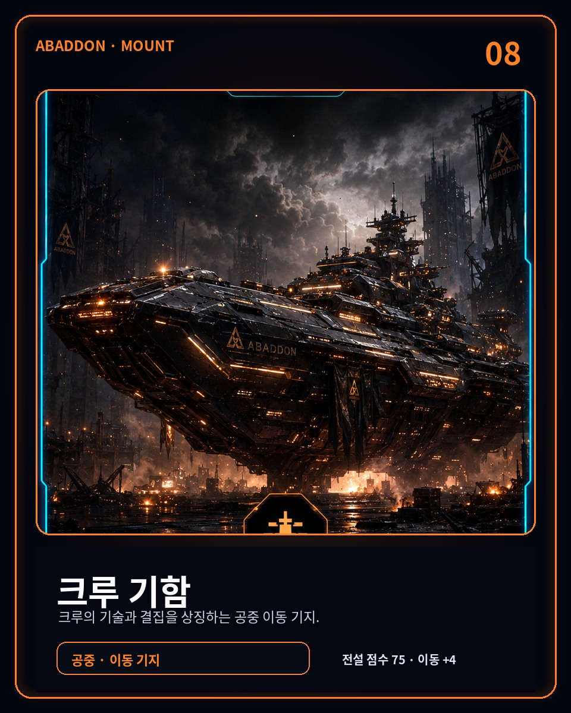
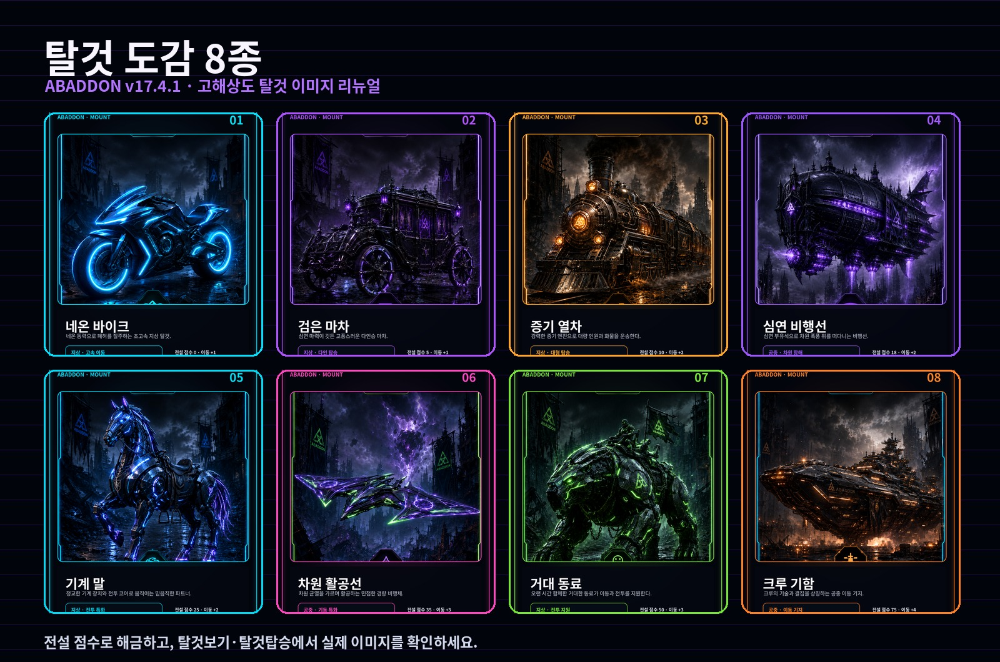

스토리 · FINAL ECLIPSE
시즌 1~6의 선택과 서버 공동 결전이 세계의 결말을 바꿉니다.
핵심 명령 보기 →ABADDON은 스토리, 살아 있는 세계, 원정, 제작, 도시, NPC 관계, 카지노와 서버 공동 결전을 한 세계로 연결한 Discord 아포칼립스 RPG입니다.

수백 개의 세부 명령을 홈페이지에 늘어놓는 대신 실제 플레이를 만드는 여섯 축만 보여드립니다. 세부 기능은 봇의 !명령어에서 찾을 수 있습니다.
시즌 1~6의 선택과 서버 공동 결전이 세계의 결말을 바꿉니다.
핵심 명령 보기 →날씨, 지역 위험도, 세계 사건과 의뢰가 매일 다른 생존 루프를 만듭니다.
원정 명령 보기 →채집한 재료를 장비와 도시 부품으로 바꾸고 성장과 전투에 다시 연결합니다.
플레이 명령 보기 →도시를 꾸미는 것에서 끝나지 않고 시장, 원정, 회복과 세계 효과에 영향을 줍니다.
BLACK CITY 보기 →호감과 신뢰, 배신, 세력 평판, 박물관과 커뮤니티 시즌이 플레이 기록을 남깁니다.
소셜 명령 보기 →카지노와 일반 도박을 분리하고 카드게임, 경마와 다양한 사이드 콘텐츠를 유지합니다.
게임 명령 보기 →ABADDON의 핵심은 기능 개수가 아니라 서로 연결된 진행입니다.
대표 화면만 남겼습니다. 나머지는 직접 플레이하면서 발견하세요.



서버에 추가하고 !시작 또는 !초보생존을 입력하세요. 이후에는 생존단말기가 다음 행동을 안내합니다.